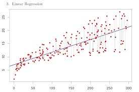
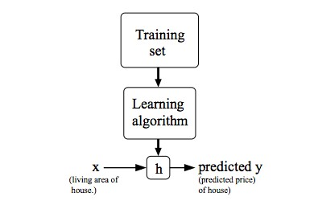
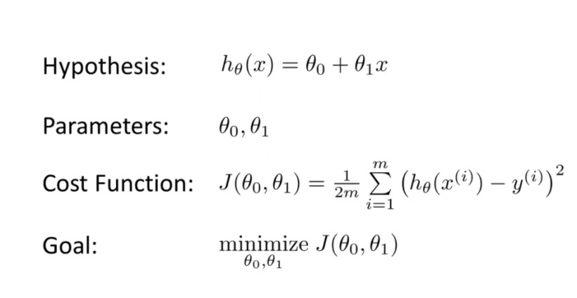
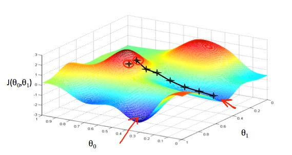

Linear Regressing with one Variable
Greetings! This is Parv Arora and I have done certifications in Machine Learning. So, in this series of blogs, I am going to give you a full tutorial on machine learning. Our next topic is Linear Regression in one variable and for that we have to first understand what is Linear Regression.
Linear Regression
Linear regression is perhaps one of the most well known and well understood algorithms in statistics and machine learning. Linear regression attempts to model the relationship between two variables by fitting a linear equation to observed data. One variable is considered to be an explanatory variable, and the other is considered to be a dependent variable. For example, a modeler might want to relate the weights of individuals to their heights using a linear regression model.
Before attempting to fit a linear model to observed data, a modeler should first determine whether or not there is a relationship between the variables of interest. This does not necessarily imply that one variable causes the other (for example, higher SAT scores do not cause higher college grades), but that there is some significant association between the two variables. A scatterplot can be a helpful tool in determining the strength of the relationship between two variables. If there appears to be no association between the proposed explanatory and dependent variables (i.e., the scatterplot does not indicate any increasing or decreasing trends), then fitting a linear regression model to the data probably will not provide a useful model. A valuable numerical measure of association between two variables is the correlation coefficient, which is a value between -1 and 1 indicating the strength of the association of the observed data for the two variables.
A linear regression line has an equation of the form Y = a + bX, where X is the explanatory variable and Y is the dependent variable. The slope of the line is b, and a is the intercept (the value of y when x = 0).

Linear Regressing with one Variable
To establish notation for future use, we’ll use x(i) to denote the “input” variables (living area in this example), also called input features, and y(i) to denote the “output” or target variable that we are trying to predict (price). A pair (x(i), y(i)) is called a training example, and the dataset that we’ll be using to learn—a list of m training examples (x(i), y(i)); i = 1, . . . , m — is called a training set. Note that the superscript “(i)” in the notation is simply an index into the training set, and has nothing to do with exponentiation. We will also use X to denote the space of input values, and Y to denote the space of output values. In this example, X = Y = ℝ.
To describe the supervised learning problem slightly more formally, our goal is, given a training set, to learn a function h : X → Y so that h(x) is a “good” predictor for the corresponding value of y. For historical reasons, this function h is called a hypothesis. Seen pictorially, the process is therefore like this:

When the target variable that we’re trying to predict is continuous, such as in our housing example, we call the learning problem a regression problem. When y can take on only a small number of discrete values (such as if, given the living area, we wanted to predict if a dwelling is a house or an apartment, say), we call it a classification problem.
Cost Function
We can measure the accuracy of our hypothesis function by using a cost function. This takes an average difference (actually a fancier version of an average) of all the results of the hypothesis with inputs from x's and the actual output y's.

To break it apart, it is (1/2) xˉ where xˉ is the mean of the squares of hθ(xi) - yi, or the difference between the predicted value and the actual value.
This function is otherwise called the "Squared error function", or "Mean squared error". The mean is halved (1/2) as a convenience for the computation of the gradient descent, as the derivative term of the square function will cancel out the (1/2) term.
Gradient Descent
So we have our hypothesis function and we have a way of measuring how well it fits into the data. Now we need to estimate the parameters in the hypothesis function. That's where gradient descent comes in.
Imagine that we graph our hypothesis function based on its fields θ0 and θi1 (actually we are graphing the cost function as a function of the parameter estimates). We are not graphing x and y itself, but the parameter range of our hypothesis function and the cost resulting from selecting a particular set of parameters.
We put θ0 on the x axis and θ1 on the y axis, with the cost function on the vertical z axis. The points on our graph will be the result of the cost function using our hypothesis with those specific theta parameters. The graph below depicts such a setup.

We will know that we have succeeded when our cost function is at the very bottom of the pits in our graph, i.e. when its value is the minimum. The red arrows show the minimum points in the graph.
The way we do this is by taking the derivative (the tangential line to a function) of our cost function. The slope of the tangent is the derivative at that point and it will give us a direction to move towards. We make steps down the cost function in the direction with the steepest descent. The size of each step is determined by the parameter α, which is called the learning rate.
For example, the distance between each 'star' in the graph above represents a step determined by our parameter α. A smaller α would result in a smaller step and a larger α results in a larger step. The direction in which the step is taken is determined by the partial derivative of J(θ0, θ1). Depending on where one starts on the graph, one could end up at different points. The image above shows us two different starting points that end up in two different places.
The gradient descent algorithm is:
repeat until convergence:
θj:=θj−α(∂/∂θj)J(θ0,θ1)
where
j=0,1 represents the feature index number.
At each iteration j, one should simultaneously update the parameters θ1,θ2,...,θn. Updating a specific parameter prior to calculating another one on the j(th) iteration would yield to a wrong implementation.
So, this is all about Linear regression in one variable. Thank you to be so patient. I hope you gained a brief knowledge about the topic.
Be alert guys I will post more on Machine Learning. Feel free to provide feedback guys to help me improve my content.
• PARV ARORA
Widget is loading comments...